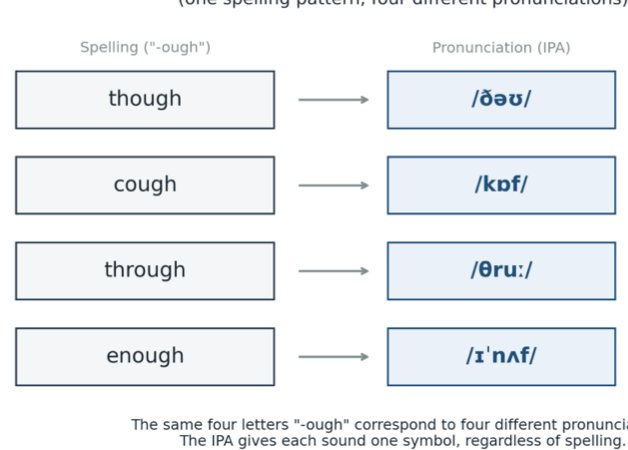

S1 · Medical English · Corrective & Articulatory Phonetics 1 · Summary
Lecture 1 — Introduction to the International Phonetic Alphabet
If you remember only this
- English spelling is an unreliable guide to pronunciation; the IPA gives exactly one symbol per sound.
- Phonetics = physical properties of speech sounds: articulatory (production — the focus of this course), acoustic (transmission), auditory (perception).
- Phonology = how sounds function in a language's system: which differences change meaning.
- Phoneme = smallest unit that distinguishes words (/p/ vs /b/: pin/bin). Allophone = a variant of one phoneme that never changes meaning (aspirated [pʰ] in pin vs unaspirated p in spin).
- /slant/ = broad (phonemic) transcription · [square] = narrow (phonetic) with diacritics, e.g. [pʰɪn] (ʰ = aspiration).
1. Why English needs a phonetic alphabet p. 2
- Same letters → different sounds, and same sound → different spellings (Kelly, 2000).
- Particular obstacle in Medical English: terms come from Greek and Latin roots whose spelling doesn't match ordinary English patterns.

2. Phonetics and phonology p. 2–3
| Phonetics | Phonology | |
|---|---|---|
| Studies | Physical properties of speech sounds | How sounds function in a particular language's system |
| Key question | How are sounds produced, transmitted, perceived? | Which sound differences change meaning? |
| Units / branches | Articulatory (vocal organs) · acoustic (sound waves) · auditory (listener) | Phoneme, allophone (Roach, 2009) |
Definitions
Phoneme: the smallest unit of sound that can distinguish one word from another — /p/ and /b/ are separate phonemes because pin ≠ bin.
Allophone: one of the different phonetic realizations of a single phoneme; it never changes meaning on its own — the p of pin is aspirated, the p of spin is not, but speakers hear "the same sound".
The course focuses on articulatory phonetics: the branch most useful for improving one's own pronunciation.
3. The International Phonetic Alphabet p. 3–4
- Developed by the International Phonetic Association: a standardized, language-independent symbol for every contrastive sound of the world's languages; each symbol always = the same sound.
| Brackets | Transcription | Shows | Example |
|---|---|---|---|
| / / slant | Broad = phonemic | Only the phonemes needed to distinguish the word — used for most purposes in this course | /pɪn/ |
| [ ] square | Narrow = phonetic | Extra symbols and diacritics for fine detail | [pʰɪn] — ʰ = aspiration (puff of air) |
- Consonant symbols: some = familiar Latin letters (/p, b, t, d, k, g, m, n, l, r/), others unfamiliar, borrowed from Greek or specially designed (/θ, ð, ʃ, ʒ, ŋ/).
- Vowel symbols are less predictable from spelling → must be learned individually (lectures 3–4: consonants and vowels).
4. IPA and medical vocabulary p. 4–5
| Word | Spelling difficulty | IPA |
|---|---|---|
| clinic | regular spelling | /ˈklɪnɪk/ |
| pharmacy | "ph" = /f/ | /ˈfɑːməsi/ |
| stomach | "ch" = /k/ | /ˈstʌmək/ |
| psychology | silent initial "p" | /saɪˈkɒlədʒi/ |
| muscle | silent "c" | /ˈmʌsl/ |
| cough | "gh" = /f/ | /kɒf/ |
Activity: /niː/ knee · /θʌm/ thumb · /haɪt/ height · /ˈeksreɪ/ X-ray · /ɡɔːz/ gauze · /jɔːn/ yawn. Broad or narrow: /tiːm/, /pen/ = broad; [tʰiːm], [pʰen] = narrow (square brackets + aspiration diacritic).
Self-check
Name the 3 branches of phonetics. Which one does this course focus on, and why?
Articulatory, acoustic, auditory. Articulatory — most useful for improving one's own pronunciation.
Phoneme or allophone: the difference between p in pin and p in spin?
Allophones of /p/ (aspirated vs unaspirated) — it doesn't change meaning.
Why are /p/ and /b/ separate phonemes?
Because pin and bin are different words.
/pɪn/ vs [pʰɪn] — what is the difference?
Broad/phonemic (slant brackets) vs narrow/phonetic (square brackets, with ʰ for aspiration).
Who developed the IPA, and what is its key property?
The International Phonetic Association; each symbol always represents the same sound, independent of language and spelling.
Which letters are silent in psychology and muscle?
Initial p in psychology; c in muscle.
Which word is /ɡɔːz/? /θʌm/?
gauze · thumb.